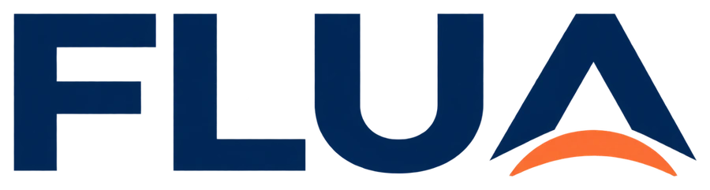

Conversa por voz
Toque no microfone e fale em inglês no seu ritmo: pode pausar e pensar. Quando terminar, toque de novo para enviar. Flo responde por voz e por escrito.
Configurações (só para o teste)
Esta versão de teste usa a sua chave da Anthropic direto no navegador. Use só no seu computador. Na versão para os alunos, a chave fica num servidor e ninguém a vê.
Toque no microfone e fale